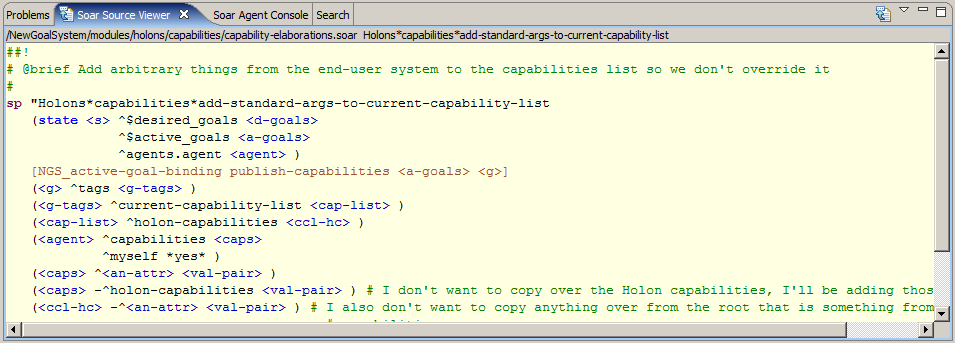

The Soar Source Viewer displays the source code of the selection in the currently active view (Package Explorer, Soar Explorer, Soar Editor, etc). This is useful for quickly browsing code without opening several editors.
Tcl Expansion

When viewing code in the Source Viewer, you many optionally turn on Tcl expansion by clicking on the toolbar button. This option displays any calls to Tcl macros in their expanded form.